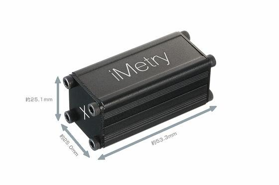
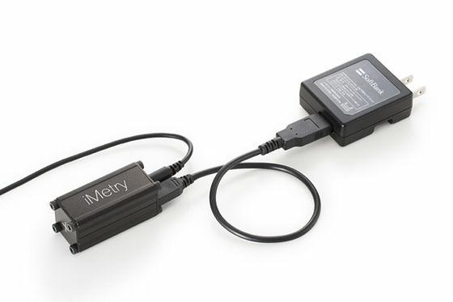
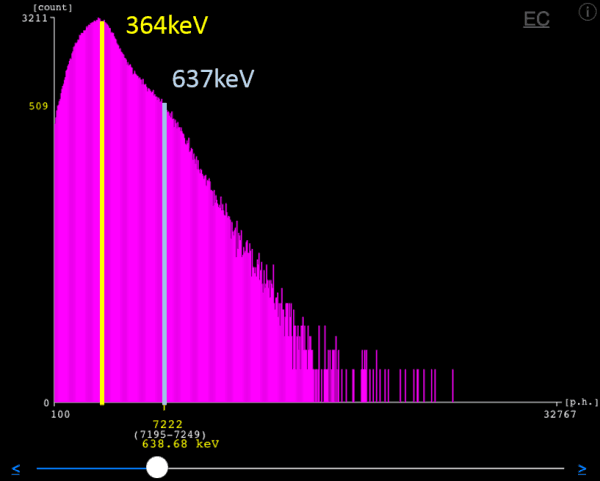

ガイガーカウンター スペクトロメトリー for iPad
|
|

|
iMetry - エネルギー補償型 フォトンカウンター(MPPC)方式 超高感度シンチレーション ガイガーカウンター スペクトロメトリー 環境放射線モニタリングポスト for the iPad
スリムでタフな漆黒の表面酸化アルミボディにエングレービングされたロゴマークと、無駄を極限まで排した研ぎ澄まされた機能性デザインは、卓越したパフォーマンスを予感させます。スリムなアルミボディーに収められた大型シンチレーターと、フォトンカウンター(MPPC)は、フォトンの数を数え、微量のシンチレーション光を数えます。フォトンカウンターの採用により、通常のフォトダイオードを使った製品とは全く異なる、比類なき次元の圧倒的なパフォーマンスを実現しています。MPPCは、10万倍にも及ぶ増幅率により、フォトダイオードを使った製品と違って振動や、電磁場の影響を殆ど受けません。MPPCに、メッシュ状に並べられて並列接続されたアバランシュフォトダイオードの平面的に並列接続されたアレーは、ガンマ線を受けてシンチレーターが微量なフォトンを発生させると、離散的にカラムが励起し、事実上、入射したフォトンの数に比例したパルスがMPPCから出力されます。iMetryは、γ線によりシンチレーターから発せられたしたシンチレーション光のフォトンの数をカウントすることで放射線測定器を形成しています。21世紀にはちょっとしたアイデアでとんでもないことができるのですね。
一方で、MPPCの超絶パフォーマンスと10万倍の増幅率は10万倍の電源ノイズと、10万倍にして温度変化を拾ってしまいます。iMetryは、ppmオーダーまでMPPCに印加する電圧を制御し、安定化させると同時に温度補正を実現しています。徹底的な電源ノイズ対策と、アナログ技術を駆使した高度な温度補正回路により、MPPCの超絶パフォーマンスを殺すことなく、iMetryは、温度ドリフトを実用的な温度レンジで制御し、実用的なレベルに性能を引き出しています。長時間iMetryを動かし続けて見られればお分かりいただけますが、iMetryの示す値はフラット、他の同クラスのガイガーカウンターと比べるべくもなく、まさにフラットです。
iMetry - the Owl of Minerva
あなたはもう科学技術に希望を失っていませんか? iMetry - the Owl of Minerva, 21世紀のテクノロジーは20世紀の不可能を可能にします。21世紀の超絶の半導体技術、アナログ技術とデジタル技術のフュージョン: iMetry。それは新たなる時代の幕開けを予感させるスペクトロメトリーの機能を備えたガイガーカウンターです。スペックには書いてあっても、あなたは、ガイガーカウンターで、0.001μSv/hオーダーの値が計測されているのを見たことがありますか？
放射線量は脈打つものだと思われてはいませんか？iMetryなら、10分も経過すれば、モニタリングポストのように、ふらつくことなく一定の放射線量を示します。 iMetryは、超小型超高感度簡易スペクトロメトリー・ガイガーカウンターで、そのパフォーマンス、感度は、コンパクトなボディから、想像も付かない6000cpm/usv/h*ものパフォーマンスを叩き出します。その感度は、まさに、通常の同クラスガイガーカウンターの10-100倍以上にも及びます。
まさしくフラット、iMetryで放射線量を計測するときは、iMetryがフラットになったときがガイガーカウンターとしての測定終了です。あなたのお手持ちの、高価なガイガーカウンターでこのようなことができますか? あなたはまだ大学ノートでガイガーカウンターの値の平均をとっているのですか? 駅前の石畳や大理石やみかげ石の石像から出る放射線をセシウムと間違えて大騒ぎなさってはいませんか?シンチレーション半導体センサーを使ったガイガーカウンターをやめて、もうちょっと、時代にあったやり方で測りませんか？iMetryなら、コンクリート作りの建物の中なら一日も置いておくと大抵のケースでラドンのスペクトラムを検出します。*
- (*セシウムによる高度汚染地域を除く、バックグラウンド線量が0.05μSv/h前後のコンクリート建造物の屋内で8時間以上、24時間程度までスペクトル計測を続けた場合、609keVのBi214による明確なラドンによるスペクトラムピークを多くの場合、認めます。Cs134/137のミックスによるスペクトラムと紛らわしいので注意が必要です)
|
|
ガイガーカウンター iMetryの放射線計測値の収斂
あなたのお手持ちの放射線測定器は、ふらついていて一定の値を示したことはないのではないですか? 値がぶれまくりませんか? あなたのお手持ちのガイガーカウンターは、繰り返し測っても一定の値を計測できますか? 放射線を測るために大学ノートやエクセルにつけて平均したりしていませんか?
- iMetryで表示される、線量値は、グラフを不必要にがたつかさせない為に、有効数字の二つ次の桁まで表示されます。有効数字までに留めますと、同じ数値をグラフ化しますと、ガタガタのグラフに成ってしまう為です。
- iMetryはエネルギー補償に対応しています。ECと成っている方がエネルギー補償された線量値です。
|
iMetryは、放射線源がなくとも1cmの鉛板で性能を確認することができます。お手持ちのガイガーカウンターは鉛の板の上に乗って居るのかどうか、判定できますか？
iMetryの下に1cmの鉛板を敷くだけで、バックグラウンド放射線量よりも低い線量率を示します。あなたのお手持ちの放射線量計でこのような僅かな差異を識別できるでしょうか？是非、やって見てください。何の違いもわからないでしょう。これがiMetryの性能です。小数点以下の細かい数値を表示するのは、このように僅かな相対差を認識するためにあります。（iMetryはとても繊細なセンサーです。測定結果の比較のためには、温度、湿度など環境を同じに保ち、同じ時間計測する必要があります。）
バックグラウンド計測（鉛板なし、約30分計測）(0.0516μSv/h)
バックグラウンド計測（1cm鉛板で下面からの放射線を遮断、上記に続けて約30分計測）(0.0355 micro Sv/h)
1cm鉛板なし→ありでの変化

（温度、湿度、測定環境、個体差、キャリブレーション誤差等により測定結果は若干異なりますが、お手持ちのiMetryも同等の計測結果を示します。有効数字はキャリブレーションの精度と、温度、湿度、環境に依存します。有効数字の下の方の桁や、相対判定限界は、同一環境下で同一時の相対的な比較にのみご利用可能です。 性能には若干個体差はございます。）
xivelyを用いれば、エネルギー補償された簡易モニタリングポストとしてお使いいただけます

iMetryで測定されたデータはXivelyに連続送信出来ます。
- Xivelyにデータをあげるのにあたって安定的な環境放射能の計測データを上げるように心がけてください。校正等を行う場合はオフラインにしてください。アドバンスドメニューでsd/pd値もあげることが出来ますので計測値のノイズ等の混入を示すクオリティの指標として同時アップロードすることをお勧めします。
- 計測はステンレスミニボトルに発泡スチロールを入れてiMetryをくるんで、静安な場所に設置して24時間移動平均で連続計測するのをお勧めします。
- 他社の温度補償されていないシステムでは、若干の温度変化により激しく測定値が変動しますのでご注意ください。iMetryは温度補償されていますが、直射日光の当たる場所では直射日光による温度変化の影響を避けきれませんのでご留意ください。
- sd/pdは、標準偏差、ポアソン分布比です。sd/pdは、100%で有るべきです。周期性の有るスペクトラム拡散を用いて居ない電源ノイズ等が混入しますとsd/pdは劣化します。100%を超える場合は、音響ノイズ等を拾っていることが考えられます。iMetryは、衝撃に強く設計されていますが、プレシジョンの小さい桁は、周辺ノイズ等に、完全にfreeではございません。通常の音量のTV等のノイズは、約0.1nSv/h以下のオーダーで測定値に影響を与えます。静安に注意してご使用ください。
- システムの動作の安定性は、iPadの世代にもよりますので、iPad2以降のiPadをお使いください。iPadのバージョン等よっては、時に再起動が必要になることもございますのでご了承ください。
|
iMetry

|
|
iMetryは、Cs134/137に最適化した、ガイガーカウンターで、同時に、ガンマ・スペクトロメトリーです。環境放射線量だけでなく、鉛ブロック下の低線量下まで使えます。iMetryの超絶パフォーマンスはあなたの今までの放射線測定器の常識を覆すでしょう。
鉛遮蔽下では微量のセシウムがあればスペクトラムも簡単に立ち低線量域でも安定した測定値が得られます。そのようなことができるのはiMetryの圧倒的な感度と、パフォーマンスによるものです。 お買い求め頂きましたらまず、鉛箱に入れてバックグラウンドを計測し、その低線量下の圧倒的な超絶パフォーマンスをお手元の他社シンチレーション検出器と比べてみてください。
iMetryを使えば、一例の計測事例を示しますと、常温で、空調した室内で、次のようなパフォーマンスが容易に確かめられます。
- 5cm鉛ブロックの遮蔽下に入れれば、一時間計測で約0.00231μSv/h*、相対的なMDAは3σで0.00027μSv/h* で、13.8cpmの、低線量値が安定して計測されます。
- 5cm鉛ブロックに1mm銅の内張を追加した遮蔽下で使用すれば、一時間計測で、バックグラウンド値で一点キャリブレーションされたiMetryは、約0.001673μSv/h* cpmで7.69cpmをマークします。相対的なMDAは3σで0.00024μSv/h* の、低線量値が安定して計測されます。
あなたのお手元の他社の放射線測定器では、そのような低線量下で、そもそも安定して低線量を計測できますか? それ以前の問題でバックグラウンドが、0.05μSv/hとか0.06μSv/hとか、0.07μSv/hとかふらふらふらふらしませんか? iMetryは鉛の中でも、バックグラウンド線量でもフラフラふらついたりしません。 iMetryは超高感度で、もっと簡便に、1cmの鉛板を下に敷いてみるだけで、簡単に鉛の遮蔽効果はご体験いただけます。あなたのお手持ちのガイガーカウンターと比べて見てください。iMetryの圧倒的なパフォーマンスにより、下に1cmの鉛板を敷いてみるだけでも計測されるバックグラウンド線量が明瞭に低下するのがご体験いただけます。
iMetryをご使用になるには、iMetry本体、iPad、専用のiPadアプリ、並びにUSB電源が必要です。
- 測定条件は: 5cm鉛ブロックを用いて1Lの空間を設け、V字型のケーブル溝を掘ってケーブルを取り出し、空調下で25度、湿度一定、一時間平均モード@バックグラウンド0.06μSv/hの下で計測しました。鉛ブロックの品質、温度、湿度、測定環境、個体差、キャリブレーション誤差等により測定結果は若干異なりますが、お手持ちのiMetryも同等の計測結果を示します。有効数字はキャリブレーションの精度と、温度、湿度、環境に依存します。有効数字の下の方の桁や、相対判定限界は、同一環境下で同一時の相対的な比較にのみご利用可能です。 性能には若干個体差はございます。
- 鉛板の使用に際しては手袋をして、ガムテープで養生するなどして直接手に触れないようにしてください。
|
|
|
|

iMetry2.0取扱ガイド(PDF 2014年6月13日版)
iMetry取扱ガイド(PDF 2013年3月25日版)
iMetry ガイガーカウンター スペクトロメトリー パンフレット
iMetry English
iMetryまとめwikiサイト
触って感じてみてください。
秋葉原の若松通商 アキバNET館2F、6Fにて実機が展示されています。若松通商eショッピングにおいてもお求めになれます。
実物を見て、大きさや、ガイガーカウンターの感度、パフォーマンスを触ってお確かめ下さい。iMetryの超絶パフォーマンスは、理解できないところだと思います。お手持ちのガイガーとあまりに違うので。お手持ちのガイガーをお持ちになって比べてみてください。何桁も違う圧倒的なパフォーマンスの前に、声を失い、もう二度とお手持ちのガイガーカウンターに戻れないでしょう。Don't think, feel!
若松通商では、iMetryを、動作展示していただいておりますので、触って使ってみて、パフォーマンスを実感し、その場でお求めになれます。お急ぎの方は若松通商で。
iMetryは、長時間計測して放置すると、一般に、ビルディングの環境のRn222の609keV近辺のスペクトラムと、環境のK40の1461keVのスペクトラムを拾います。K40は、人が居ないと拾わないこともあります。放射性物質が何も置かれてなくても、環境のRn222と、K40のスペクトラムを拾うこと、これだけでもiMetryの超絶パフォーマンスをご理解いただけるでしょう。あなたのお手持ちの放射線測定器は、そんなことが出来ますか？
|
iMetry 取り扱い店舗 (ソフトウエアはAppStoreでお求めいただけます)
若松通商 秋葉原本店1F （49,800円） 大幅値下げ！（40,937円）(オンラインショッピング)
オンラインショッピング
iMetry本体ハードウエア販売Webサイト (ソフトウエアはAppStoreでお求めいただけます)
iPadアプリ
学校、法人、研究機関等
仁木工芸株式会社 （49,800円） 大幅値下げ！（40,937円） 学校、研究機関等
|
|
|
|
|
|
|
| 最小クラスの放射線測定器
|
iPadと一緒に
|
| iMetry本体(検出器モジュール)の大きさは25mmx25mmx53mm。わずか43g。スペクトロメトリーとしては最小クラスのコンパクトさです。ケーブルを伸ばしてご使用いただけるため、遮蔽環境でもご利用になれます。
|
iMetryはiPadと組み合わせて使います。放射線計測結果はiPadの大画面に表示。時間経過による変化もグラフで確認できます。対応確認済み機種は、初代iPad、iPad2、第３世代iPad、iPad mini、第４世代iPad、iPad mini2、iPad Air、iPad mini3、iPad Air2です。
|
| 高感度センサー
|
各種インターフェース
|
| シンチレータ＋高性能化半導体センサーにより高い感度と、極小のノイズカウントを実現しました。ノイズオフセットは必要ありません。遮蔽環境下では、微量のセシウムの出す微かなスペクトラムも明確に検出可能です。 微量な放射線計測に最適です。
|
インターフェースは放射線の強さをiPadに伝えるオーディオポートと電源のmicroUSB端子です。
赤いLEDは検出した放射線のエネルギーレベル(keV)に応じた輝度で光ります。
|
|
使い方
iMetryは、iPadにつないで使用します。iMetryは、測定ボタンを押すだけで同時にガイガーカウンターとスペクトル分析ができる、スペクトロメトリー、ガイガーカウンター、放射線測定器です。 ご使用になる準備に、ややこしい設定は不要で、添付いたしました簡単な校正パラメーターを初回に入力するだけです。ご使いになるのは開始ボタンを押すだけで初心者の方でも簡単にお使いいただけます。
始めてお使いいただく前には簡単な設定が必要ですが、iMetryの使い方は測定ボタンを押すだけで、簡単です。
- まず、AppStoreで、iMetryをインストールしてください。
最初に、製品に添付されている簡易キャリブレーションパラメーター表を入力すれば、後は測定ボタンを押すだけです。下のような表を入力するだけです。 準備はこれだけです。マニュアルと悪戦苦闘することはありません。
簡易キャリブレーションパラメーター表には新旧２種類あります。お手持ちの表に合わせてiPadアプリに設定をしてください。
旧版
新版 「簡易補正 EC(70%)」の欄があるのが新版となります。
旧版 簡易キャリブレーションパラメーター表での設定
１．「パルス検出しきい値」の値をiPadアプリに設定します。
２．iPadアプリの「簡易補正 EC(70%)」を「70%」に設定した後、線量キャリブレーションの値をiPadアプリに設定します。
３．エネルギーキャリブレーションの値をiPadアプリに設定します。
以上で設定は終了です。
新版 簡易キャリブレーションパラメーター表での設定
１．「パルス検出しきい値」の値をiPadアプリに設定します。
２．iPadアプリの「簡易補正 EC(70%)」を「100%」に設定した後、線量キャリブレーションの値をiPadアプリに設定します。
３．エネルギーキャリブレーションの値をiPadアプリに設定します。
以上で設定は終了です。
iMetryは、測定時間を10分以上長く取れば、値が収束し、値がふらふらする事も無く、ちょっとした振動で異常値を示すこともなく、大画面で、わかりやすい操作で他社のガイガーカウンターよりも初心者でも簡単にお使いいただけます。
|
|
スペクトロメトリー、ガイガーカウンター、放射線計測例
iMetryによる、ガイガーカウンター放射線計測

Cs137 スペクトロメトリー (線形表示)
Ba133 スペクトロメトリー (線形表示)
Cs134 & Cs137 スペクトロメトリー (線形表示)

Cs134/137の600keV近辺のピークはクリスタルが大きい事もあり、CsI(Tl)のシンチレーターの分解能では分解能が不足していて分離できません。
K40 スペクトロメトリー (対数表示)

キャチブレーションがずれているか、Ba133、Cs137の二点キャリブレーションでは133Baの合成点のズレが生じていると、考えられます、K40のポイントの追加キャリブレーション設定が必要です。
Co60スペクトロメトリー (線形表示)

I131スペクトロメトリー (対数表示)

コンクリートビル内のバックグラウンド スペクトロメトリー (Rn222) (対数表示)
Cs134/137を計測している場合は、809keVのスペクトラムも検出します。コンクリートビル内では一般に609keVのラドンによるピークが長時間計測で容易に確認されます。セシウムの検出と間違えないように注意が必要です。
Rn222による、295, 352, 609,1120,1765keVのスペクトラムと考えられます。295のピークは、スレシホールドを200に切られていた時の計測で、ちょっとうまく見えていませんが....
iMetryの校正にいいかもしれません。部屋の放射線がラドンとわかっているときは長時間放置して、Rn222でスペクトルを再校正するといいでしょう。校正核種を使わずに再校正する。これもiMetryならでわの事ではないでしょうか?
コンクリートの建物でセシウムでない場合に検出するのは、たいていラドン系列です。
50mm厚鉛箱内部のガイガーカウンター（パルス検出しきい値＝100）、放射線計測
50mm厚鉛箱内部のスペクトロメトリー（パルス検出しきい値＝100）（対数表示）
50mm厚鉛箱＋1mm銅版内部のガイガーカウンター（パルス検出しきい値＝100） 放射線計測

50mm厚鉛箱＋1mm銅版内部のスペクトロメトリー（パルス検出しきい値＝100）（線形表示）
212Pbの238.6keVのスペクトルが出ています。室内バックグラウンド計測時には出ないスペクトルです。
50mm厚鉛箱＋1mm銅版内部のスペクトロメトリー（パルス検出しきい値＝100） （対数表示）

|
用途
放射線初等教育に、放射線計測入門、ガイガーカウンター、スペクトロメトリー入門に
iMetryを使えば現場でも簡易計測でラドンを測ってセシウムと勘違いするようなことは起きません。
放射性物質を使用する現場での日々の放射性物質の管理、簡易スクリーニングに
スペクトロメトリー ガイガーカウンター iMetry 仕様諸元(iMR3 A211 OoMER1)
| 対応機種
|
iPad2,3,4 iPad mini,mini2 iPad Air ※10
iPad Air2とmini3ではモデル判別ルーチンのせいで0cpmになることが確認されています。次のアップデートで対応予定です。
|
| 付属品
|
USBケーブル（microB to A）、iMetry専用ケーブル（ミニジャック2極 to 4極） 簡易校正パラメータ及び保証書
|
| 使用電源
|
USB電源(DC 3.3-5V) ※1 ※2
|
| 消費電流
|
26.5mA
|
| 検出器
|
CsI(Tl)シンチレーター(10mm×10mm×20mm）＋100x100セル フォトンカウンタ(MPPC)
|
| 検出対象
|
γ線
|
| 動作レンジ
|
0.001μSv/h～10μSv/h ※3 ※4 ※6 ※9
|
| 感度
|
約6000cpm/(μSv/h) ※3 ※5
|
| 分解能
|
< 0.001μSv/h @ 6時間移動平均モード *8
|
| エネルギーレンジ
|
200keV以下 ~ 2000keV以上 ※3
|
| γ線検出効率
|
約28% ※7
|
| エネルギー補償
|
あり（iOSアプリ iMetry2.0.0以降が対応）
|
| 使用温度範囲
|
常温（結露なきこと）
|
| 本体サイズ
|
W25.0mm × H25.1mm × D53.3mm（突起物除く）
|
| 本体重量
|
42.8g
|
| 本体ケース材質
|
表面酸化アルミニウム (ロゴマーク: CNCあるいはレーザーエングレービング)
|
| 簡易校正精度
|
約30% (@0.06μSv/h) ※3 ※6 ※9
|
|
- ※1 単3電池3本式の充電器の一部などは、充電器の保護回路の働きで電源が供給されない場合があります。その場合は一旦iMetryから充電器のコネクタを抜き、少し待ってから再度iMetryに接続するとお使いいただけることがあります。
- ※2 電池式充電器では電池が減ってくるとインバーターのスイッチング動作を拾ってしまい、線量が上がるように見えます。明らかに線量の異常値が出るときは、まず電池の減り具合を確認してください。
- ※3 センサーの性能のばらつき、個体毎の校正の誤差により若干異なることがありますので、ご了承ください。
- ※4 上限値は、出荷時の簡易校正点からの誤差を考えてのものです。高線量域でご使用になる場合は、高線量領域での追加校正等が必要となることがございます。動作レンジの上限値は、提供された簡易校正の、校正精度によるもので、誤差が大きくなる目安の値として5μSv/hとしています。機器の動作限界ではございません。個体にもよりますが約5-10μSv/h程度までリニアリティがあります。ピークホールド回路の時定数を1msに置いておりますので、60000cpmに及ぶ様な高線量域においては、パルスの重複による検出ロスにより、リニアリティは、下方に損なわれることをご留意ください。
- ※5 パルス検出閾値を100に設定した場合のバックグラウンド値で一点校正された時の校正パラメーターの代表値を1μSv/hへ換算した値です。
- ※6 ガイガーカウンターの簡易校正精度は、校正点における精度です。初期出荷された装置は、同梱された簡易校正パラメータ表には、Cs137の試験用線源から間接的に校正された線量パラメータが書かれており、Cs137の661keVにおいて、線量が校正されております。現時点ではiMetryソフトウエアは、エネルギー補正を行っていないため、ラドン由来の低エネルギーのスペクトルは、シンチレータのエネルギー特性により低エネルギー領域は、感度が高く過大評価されるため、初期出荷された装置に同梱いたしました簡易校正パラメータを使用しますと、約3割バックグラウンド線量が高く表示されてしまいます。初期出荷された装置をお使いの方は、大変お手数ですが当座は同梱された簡易校正パラメータを3割下げてご使用ください。また、その場合、137Cs由来の線量値は逆に3割低く表示されることとなります。iMetryの将来のソフトウエアバージョンでエネルギー補正の問題は対応予定です。また、新規に出荷されるものは、バックグラウンド線量が適切に表示されるように、エネルギーを簡易補正した簡易校正パラメータを同梱いたします。また、その場合は、ソフトウエアでエネルギー補正が行われるまでは、当座はCs137の値が3割過少評価されることとなります。iMetryの高性能が故の問題であることをご理解いただければと存じます。
- ※7 γ線検出効率は、Cs137 (経過年月を補正)試験核種を用いて、15cmの距離でバックグラウンドCPMを計測して引いたCPM値を、理論的に試験核種のBqより計算されるCPM期待値で除した%を表記しております。鉛遮蔽環境で計測すると特性X線を拾う恐れがあるため非遮蔽環境で計測しています。空気中の減衰は無視しています。個体により若干のばらつきがあります。
- ※8 分解能は、精度を意味するものでは有りません。ここで示す分解能は、常温に空調された室内で、1インチ以上の発泡スチロールで温度緩衝した状態で、同じ場所で、同じ状況で、電源投入後一時間以上置いたもので(温度補正は致しておりますが、電源投入後の温度ドリフトの影響を避ける)、コントロールマテリアルを計測した後、間をおかずに計測した場合で、(環境放射能の変動の計測を含みます) 大概の事例において観測される分解能を示します。
- ※9 また、rel2.0以降のソフトウエアでは、エネルギー補償に対応いたしました。簡易校正を無効にする、100% / 70% スイッチを線量較正画面に用意いたしましたので、rel2.0以前の簡易校正された校正シートをお使いいただいて簡易校正する場合は70%側に、rel2.0以降にお買い求めになられて、70%の簡易補正の入っていないCs137からディケイ、離隔距離から理論的に求められた較正値を入力する場合(簡易校正しない場合)は、100%のスイッチにしてお使いください。rel2.0以降の物には100% / 70%スイッチの指定が書かれています。なお、rel2.0以降、以前にiMetry本体には何の変更もございませんのでご了承ください。予告いたしていましたとおり、iPadのソフトウエア側でエネルギー補償をサポートいたしております。
- ※10 iPad1につきましては、既にAppleのサポートが終了しております。
|
|
インターフェース
- 両LEDは通電されるまで、無色透明です。
- 電源LED - 通電されているときに緑色のLEDが点灯します。 USBコネクターは、しっかり奥まで差し込んでください。ご使用に際しては、差し込み不十分、接触不良、電池切れ等により、緑色のLEDが、瞬いたり、不安定になっていないか、ご確認ください。通電状態が不安定ですと、放射線によらないカウントが計上されてしまうのでご注意ください。
- 検出LED - 検出した放射線のエネルギーに応じた輝度で点灯します。
- micro USB - iMetryへの電源供給用端子(入力電圧DC 3.3-5Vに対応します)。
- 3.5mm オーディオポート - 検出した放射線のエネルギーに応じたアナログパルスを出力します。
|
= 電源 =
- iMetryには一般的な携帯用のUSB電源が使用できます。 *本機は電源を入れると放射線を検出し、放射線のエネルギーに応じた輝度で赤いLEDが点滅します。 *センサーから電源を抜く時には、ノイズによりセンサーのLEDが点滅します。 *また、電池切れを起こすと、赤いLEDが点灯し続けることもあります。この際のLED点灯は放射線の検出由来ではございません。 *USB電源、iPad、並びに、携帯電話充電器は、付属いたしません。 *同梱するUSB A to micro Bケーブルか、同等のケーブル、USB充電器等を用いて給電して、ご使用ください。
| AC電源
|
携帯電話用充電器
|
|
|

|
携帯電話やスマートフォン向けの充電器がご使用いただけますが、以下の注意が必要です。
- 単3電池3本式の充電器の一部などは、充電器の保護回路の働きで電源が供給されない場合があります。
- その場合は一旦iMetryから充電器のコネクタを抜き、少し待ってから再度iMetryに接続するとお使いいただけることがあります。
- 電池が切れますとiMetryの赤LEDが点灯しつづけ、異常に大きなcpm値を検出しますが、放射線ではありません。
- 2出力式のiPadと共用する充電器は、iPadが2Aの出力を必要とするのに、十分な出力が得られず、リップルノイズ等により、異常高値を記録することがあり、ご利用になれませんのでご注意ください。
|
|
ガイガーカウンター計測時の注意
iMetry本体は、アナログレコードのピックアップのような、超高感度なアナログ回路で、高級な放射線計測装置のセンサーヘッドを取り出してきたような、超高感度ガイガーカウンター、超高感度スペクトロメトリーです。いわばレコードのピックアップユニットで、ノイズで誤動作しない様にするためには、特別な注意が必要です。そのため、ケーブルも金メッキされ、本体はアルミケースでシールドされています。放射線のパルスは、iPadのマイク入力にアナログ信号で送って動作させております。 ご使用に際しましては、コネクタの接触不良、電池切れ、コネクタの半ざさりなど、ノイズが発生して誤動作しないように、作動中はレコードのピックアップを扱うように、ノイズを出さないように、注意してご使用ください。ケースが金属と擦れてるだけでも、ノイズが出ます。 極端に大きな値の異常値が出た場合は、まず、電池を交換したり、接触不良が無いか確認したり、センサー追加画面で波形を確認したりして、電源ノイズ、接触不良によるノイズが乗っていないかご確認ください。 iMetryがアナログレコードのピックアップのような、超高感度のアナログセンサーで、精密機器であることにご留意下さい。 iMetryは、机にぶつけるなど硬い衝撃があると、微量ですが、少なくとも衝撃の回数だけcpmが上がりますが、一方、 衝撃、振動に対しては、他社の製品に比べ圧倒的に耐性がございます。普通のガイガーカウンターでは、ちょっとした衝撃を加えると異常な測定値が出ますが、iMetryではそのようなことはございません。iMetryは、他社の製品の様に殆どマイクのようになって何を測っているのかわからなくなるような事はございません。通常のご使用の範囲では、振動等による誤カウントでお困りいただくことは無いでしょう。測定中も腫れ物を扱うような、操作は不要です。 車のシートの上などでの振動では一般には計数は上昇しませんが、iMetryに強い衝撃を与えないようにしてご利用ください。
- 初回ご使用時には、添付のキャリブレーションパラメータ表を、センサー追加画面で御入力の上ご使用ください。
- 計測するときは、なるべく以下のような環境でご使用ください。
- 携帯の充電器を使用する場合は、電池を新しいものに入れ替えてからお使いください。
- 金属表面でない机等の上で計測する
- 室内で、空調で可能なら室温を25度に設定してください。(設定温度は必ずしも25度である必要はなく、温度補正回路を搭載していますので快適と思われる空調温度で、室温を一定に保ってください。急激な温度変化につきましては温度補正回路が正しく追随できませんので、一定温度に保った室内で、iMetryに通電してウォーミングアップを可能なら30分以上行った方が望ましいです。)可能なら空調の温度を設定してから、iMetryに電源をつないでiMetryの装置の温度が安定するまで十分時間をかけてください。 (温度補正回路は搭載しておりますが、急激な温度変化には追随できません)
- また、iMetryの測定有効数字は、その時点その場所、その温度における相対計測値としてお使いいただけるもので、絶対計測における有効数字ではございません。iMetryで精密に計測できるのはあくまで相対的な差分でごさいまして、コントロール検体と、被検体を何度も計測を繰り返して計測する差分の有無の、有効数字であることにご留意ください。絶対精度は、簡易校正のレベルでございまして、精度をあげるには、バックグラウンド放射線の遮蔽と、個別に精密な校正が必要で、また、温度、湿度の管理も必要です。
- 相対的な線量計測においても、バックグラウンド線量が測定したい線量よりも大きい場合は、一般に、判定は困難です。一般に環境放射能の測定データは与えられた観測時間の間に得られたカウント数のSQRTに一致し、ポアソン分布に従います。バックグラウンドを遮蔽してcpmが小さい場合は、より、同じ時間でのゆらぎのパーセンテージは大きくなります。有効数字は同一環境の下で、コントロールと比較して、複数回の計測を行って、少なくとも3SD以上の有意差があることを持って判定する事必要があります。
- 鉛遮蔽環境下では、比較的低いeVのガンマ線が良く遮蔽出来ますので、微量の放射線量でも、1時間以上の時間を掛ければ検体のスペクトルは単純な3SD以上の有意な線量比較より却って容易に確認でき、スペクトルを確認することにより放射性物質の有意な検出確認が容易にできます。
- 絶対精度は、校正の精度に依存します。
- より精密な計測にあたっては室内で空調で常温で室温を一定にし、通電してウォーミングアップを行った後、安定した状態で、バックグラウンド、検体を交互に何回か計測して相対線量の差分を確認してください。また、放射線が有意に認められる場合は、それぞれ長時間かけて、バックグラウンド、並びに、検体有りの両方で同じ時間をかけてスペクトル分析を行い、放射性物質の特性スペクトルの有意な存在を確認してください。
- より精密な計測に当たっては、校正された測定器と、試験核種を用いて校正を行ってください。
- 振動などを与えず、静安を確保してください。
- 付属した専用ケーブルが、きちんと刺さっているか、また、2pinと4pinの向きをご確認ください。
- また、電源USBケーブルが、きちんと奥まで刺さっているかご確認ください。また、電源状態を示す、本体の赤いランプが、安定的に点灯しているかご確認ください。電源状態が不安定ですと、誤動作する恐れがあります。
- 厳密な簡易計測に当たっては、温度を常温に保ち、エネルギーキャリブレーションは標準線源を用いて、線量キャリブレーションは標準線源と校正済みの線量計を用いて、それぞれ簡易校正（パラメータの変更）を行ってからご使用いただくことが望ましいです。
- 一部のポケットWi-Fiやその他電波、ノイズを出す電子機器は本製品の近くでご使用にならないでください。
- iMetryの外装と金属が擦れるとノイズが発生し、適切な計測ができないことがあります。測定するときはiMetryが金属に直接触れないよう、必ずiMetryをビニール袋に入れるなどして下さい。
- 専用ケーブルやUSB電源の差し込みが浅いとノイズを検出してしまいますので、各コネクタはしっかりと奥まで差し込んでください。
- 専用ケーブルを挿すとiPadが入力デバイスの切り替えを行う等の挙動により、iMetryがノイズをカウントしてLEDが点滅しますが、放射線ではありません。
- 計測中にiMetry側の専用ケーブルを抜きますと、急激に3000cpmを超える様な多くのパルスが検出されますが、放射能によるものではありません。
- 同様に計測中にiMetry側の電源ケーブルを抜きますと、3000cpmを超える様なパルスが検出されますが、これも放射能によるものではありません。 電源ライン抜去後の高いcpmの発生におきましては、今後ソフトウエアにノイズ検出時のミュート機能を搭載するなどで対処する予定です。
- 同様に計測中に、iMetryの給電にお使いの携帯充電器のバッテリーがなくなってきますと、電圧が低下すると同時にノイズが発生し、3000cpmを超えるパルスが検出されますが、これも放射能によるものではありません。緑のパイロットランプが暗くなったり点滅しながら、赤のランプが付きっぱなしに成るのは、電池が無くなったサインですので、放射能によるものと間違えないように、ご注意ください。長時間の測定を行う場合は、このような不具合を防ぐためになるべくACアダプターを電源にご使用ください。
- また、分散がポアソン分布に一致する原理を用いてsd/pdを表示しておりますが、sd/pdが100%を大きく割り込む場合は、測定は、ノイズ等により損なわれていると考えられ、電源ノイズ等が混入しておりますのでご注意ください。
- また、iPadのWi-FiがiMetryの計測に影響ことがありますので、設定メニューで、通知設定をオフにするか、機内モードに設定してお使いください。
- iMetry ver 1.0では、エネルギー補正はサポートしておりませんでしたが、ver2.0以降ではサポートいたしました。 エネルギー補正は、ソフトウエアで行われるもので、iMetryのハードウエアには変更は、ございません。iPadのソフトウエアをアップデートいただくだけで、エネルギー補正に対応いたします。
- 機器の校正がずれていることもあり得ますし、iMetryは、あくまで簡易計測器でございますので、疑わしいスペクトラムが見受けられる場合は、より専門的な機器を用いて詳細分析の上、ご判断いただきますようによろしくお願いします。
- 高線量地域を除いての話ですが、掃除された室内等で、遮蔽等無しで、iMetryを使用して8時間以上スペクトルを取得しますと、状況にもよりますが、バックグラウンド放射線のスロープの中に、ラドン由来の、600keV近辺のスペクトルが単独で、且つ比較的シャープに、800keV近辺のピーク(134Cs high)を伴わずに立つ事が経験されますが、そちらの方は、214Bi由来の609keVのスペクトルである場合が支配的ですので、ご注意ください。また、長時間のバックグラウンド計測では1460keVの40Kのスペクトラムも測定者や、建物等から由来して立つことが一般的です。また、iMetryのドリフトも考えられますので、試験線源や、既知のスペクトラムを持った試料等を用いて校正ドリフトの確認、他のコンクリート建築物でのご計測、他の高性能なスペクトロメトリー等を用いて長時間の計測等を行って、ご確認ください。
- 計測中は周りを人が歩きまわるなどしないようにしてください。人のカリウムから出る放射能も長時間の計測ではスペクトルも検出しますし、多人数で取り囲みますと遮蔽効果とカリウムによる放射線の影響が現れますので、ご留意ください。
|
|
保管上の注意事項
- 本製品は精密なポテンショメーターやセンサーを使用しておりますので、落下や強い衝撃を与えると調整が狂うおそれがあります。
- 水に濡らさないでください。水がかかった場合はすぐに拭き取ってください。
- 次のような場所に保管しないでください。
- 直射日光の当たるところ
- 水のかかるところ
- 湿度が高いところ
- 温度が高く(50℃以上に)なるところ（暖房器具の近くや車のダッシュボードなど）
- 温度が低すぎるところ（冷蔵庫や冬季の屋外など）
|
|
iPadアプリ iMetry 2.4.6βがリリースされました。
- iOS8.1.1で画面が回転するように修正
- iOS8.0、8.1でpopover等のウインドウが出た状態で回転させると、画面が真っ黒になる現象に対応
- その他軽微な修正
iPadアプリ iMetry 2.4.4βがリリースされました。
- 本バージョンより、iOS6以上の対応となります。
- 64ビットCPU(iPad mini Retina、iPad Air)でのパルス検出定数変更画面の不具合を修正
- iOS8でデータ保存時にクラッシュする問題を修正
- Xivelyタブの表示上の軽微な問題を修正
iPadアプリ iMetry 2.4βがリリースされました。
- 移動平均区間を24時間まで設定可能
- 放射線量率の有効桁数算出方法を変更
- 放射線量率の表示を有効桁数+0～+2桁に変更可能
- 線量率をμSv/h単位でXivelyにアップロード可能
- sdをXivelyにアップロード可能*その他軽微な修正、改善
iPadアプリ iMetry 2.3βがリリースされました。
- iPad1の世代間補正係数を微修正
- 移動平均区間を6時間まで設定可能
- 放射線量率の表示を有効桁数+1桁に変更
- その他軽微な修正、改善
iPadアプリ iMetry 2.2βがリリースされました。
- 放射線量画面のスワイプ、ピンチ操作の不具合を修正
- 放射線量画面のEC/NoECの割合表示を削除
- 放射線量率の有効桁数算定ロジックを変更
- パルス検出画面で世代間補正係数が適用されていなかった不具合を修正
- Xively画面の設定が反映されない不具合を修正
- Xivelyにsd/pdもアップロード可能
- その他軽微な修正、改善
iPadアプリ iMetry 2.1βがリリースされました。
- アプリがクラッシュするバグの修正
- 一部iPadの世代間の違いを吸収する係数の修正
iPadアプリ iMetry 2.0βがリリースされました。
- エネルギー補償はiMetryセンサーモジュールに特化しています。他のセンサー利用時には補償しません。
- iPad世代間のキャリブレーションの違いにも対応し、Ver 1.x.x をiOS7で使用した際のトラブルは解消いたしました。
- 2.0βではアプリがクラッシュする、一部iPadの世代間の違いを吸収する係数のミスなどいくつかの不具合が確認されており、近日バージョンアップ予定です。（Ver 2.1で対応済み）
|
|
iOSのバージョンをiOS7にアップグレードしたiPad2,iPad3,iPad4、及びiPad Air、新iPad miniでiMetry1.x.xをお使いの方へ
- iMetryのバージョンアップがリリースされました。不具合を解消致しましたので、パラメータ設定などを、写真を取るなどして、また、保存データをメールするなどして、バックアップを取られた上で、早急にアップデートいただけるようお願いいたします。
- この問題はiMetry version 2.0.0でfix致しました。御手数ですが、パラメータデータ等をバックアップの上、新バージョンにバージョンアップしてください。
- iOSのバージョンをiOS7にアップグレードしたiPad4及びiPad Airにおいて、iMetry1.x.xをお使いになられますと、エネルギーと線量のキャリブレーションの値が大きな下方ズレを確認しております。一方、iPad2では、iOS7にアップグレードしてもキャリブレーションのズレ等は見受けられておりません。この問題については緊急対応中です。iPad4及びiPad Airをお使いのお客様にはしばしご迷惑をおかけしますが、新バージョンのリリースまでお待ちくださいますようお願い申し上げます。なお、現在、iMetryアプリの新バージョンを製作中で、新バージョンではエネルギー補償に対応予定です。この事象はiOS7.0.2で確認しております。
- 新バージョンソフトウエアiMetry 2.0.0では、この問題に対応しており、iMetry 旧バージョンをお使いの方は、iOSをバージョンアップする場合、新iPad AIR, 新Mini等をお使いの方は、新バージョンにバージョンアップしてください。iOS7にも対応しております
Known problem, issues, errata, improvement and workaround
- iPad Air2とmini3ではモデル判別ルーチンのせいで0cpmになる問題は最新リリースでFIXしました。最新版にアップデートしてご利用ください。
- 最新のiMetryアプリ(ver.2.0以降)をお使いのお客様で3割減の補正をしていると書かれた簡易キャリブレーションパラメータ表をお持ちの方は、線量設定画面で70%に設定して簡易キャリブレーションパラメータ表の線量値をそのまま入力して下さい。他は特別違いはございません。
- 今後出荷予定のiMetryは、線量設定画面のスナップショットを模した簡易キャリブレーションパラメータ表を添付いたします。
- sd/pdを100%に保ちRadAngelの機器のノイズを影響を避けるため、パルス検出しきい値の初期値は200で提供されておりますが、250を推奨します。
- 新規にお買い上げいただきますお客様の商品はロングケーブル、ショートケーブルを同梱しております。また、キャリブレーションも最初から新しい設定となっておりますので、再計算等は必要ございません。また、既存のお客様の製品につきましても、動作セッティングの設定の変更だけでございますので、新規のお客様のものと何ら変わるところはございませんのでご了承ください。
- 同梱しておりますケーブルを、より高性能なシールドケーブルに仕様変更いたしました。同梱しておりますショートケーブルを使用しますと状況によっては、電源から発生するノイズで線量値が若干上昇することがございます。新しいケーブルを順次お送りいたしますので今暫くお待ちください。届きましたら旧ショートケーブルはご廃棄いただきますよう、宜しくお願い申し上げます。また、今回ロングケーブルも同梱いたしますので遮蔽環境等でご使用の際にご活用ください。
- また、今回ケーブルの仕様変更に伴いまして、iMetryの動作点変更を行いたいと思います。現行のパルス検出閾値を、p.h.200から、p.h.100に変更いたします。その結果、iMetryのバックグラウンド放射線のカウントするエネルギーレンジがp.h.200以上からp.h.100以上に引き下げますので、p.h.200からp.h.100までの線量カウントが追加されます。そのため、線量キャリブレーション設定、あるいはご提供させていただいております、簡易線量キャリブレーションパラメータにおきまして、cpmを20パーセント上げていただく必要がございます。その辺の込み入ったパルス検出閾値変更、エネルギー簡易補正に伴うパラメータの簡易的な変更をご説明する、わかりやすいPDFをご用意いたしましたので、詳しくは、そちらをご覧ください。
iMetry 同梱の専用ケーブルの仕様変更とパルス検出しきい値についてのお知らせ(PDF)
- また、添付いたしましたパルス検出閾値、並びにエネルギー簡易補正換算手順に一切かかわらず、バックグラウンド線量と校正済みのガイガーカウンターを用いて、再校正なさる場合は、パルス検出閾値をp.h.200からp.h.100に変更して、放射線量を、校正済みガイガーカウンターと同じに合うように、一点校正するだけで、添付しました手順書の様な込み入った換算を行う必要は何も御座いませんので、むしろそちらをお勧めいたします。iMetryは、非常に高感度な測定器でもあり、経時ドリフトは避けられません。十分にエージングして後出荷いたしてはおりますが、在庫中の経時変動、温湿度によるドリフトもございます。あくまで初期的に添付しております校正パラメーターは最初にご使用になる時のお客様の便のためであり、可能な限り随時再校正を行ってのご利用をお勧めいたします。
- パルス検出閾値の変更による動作点変更に伴い、iMetry Detector Moduleの感度は更に向上いたします。感度は、代表値で6000cpm/μSv/hにも及びます。cpm/μsv/hの値は、測定器のパフォーマンスを向上し、低線量域での分解能の向上、計測値の早期収束、安定性の向上に繋がります。圧倒的なiMetryのパフォーマンスをご体験ください。また、これらの変更はソフトウエアの動作点の変更であり、初期にお買い求めいただいたお客様におきましても、同様に適用されるもので、ピックアップユニット本体は何ら変更はございませんのでご留意ください。
- 初期出荷された製品(Detector Module)はCs137試験核種から理論的に簡易校正されておりました、そのパラメーターを用いますと、シンチレーターのエネルギー特性によりバックグラウンド線量が約30パーセント過大評価されてしまいます。バックグラウンド線量を計測した時に過大評価されることを避けるために、当座のワークアラウンドとして30パーセント線量表記を下げて当座は簡易的にエネルギー補正を行ってご使用いただきますようにお願い申し上げます。また、その為セシウム由来の放射能については過小評価される事をご留意ください。Cs137校正核種で言うと30パーセント過小評価されることとなります。本件につきましては、将来的にソフトウエアのアップデートによりエネルギー補正をインプリして問題解決にあたる予定です。
- 計測中にiMetry側の電源ケーブルを抜きますと、3000cpmを超える様なパルスが検出されますが、これも放射能によるものではありません。 電源ライン抜去後の高いcpmの発生におきましては、今後ソフトウエアにノイズ検出時のミュート機能を搭載するなどで対処する予定です。
- 検出器の製品詳細仕様、パラメーター等については装置のマイナーリリース番号で管理されております。仕様、性能の目安等につきましては、諸事情により、予告なく、パラメーター、スペック、仕様等の性能表記等の変更を行う場合がございますが、ハードウエアーや、チューンの変更を伴うものではございませんのでご了承ください。iMR3OoMER1は全て同じハードウエアです。また、エネルギー補正の問題、電源断時の線量のはね上がり等の問題は、ハードウエアの改修を必要とする問題でははなく、将来のソフトウエアで改修予定の問題ですのでご了承ください。
|
|
免責事項
- 製品の品質には注意を払っておりますが、製品の不具合、校正のずれ、使用上の不具合につきましては、フォトンを数えるような極めてデリケートな物理現象を扱った機器でもあり、良品交換以上の対応を致しかねますので予めご了承ください
- 本製品は廉価版の簡易測定器でございます。ご利用に際しましては、他の複数の測定器や検査機関の検査結果等と比較検討の上、ご併用の上ご利用頂けると幸いです。
|
|
参考文献
放射能測定器及び放射線測定器等の校正について 経済産業省
Gamma Ray Spectrometry, Practical Information, document compiled by Nafaa Reguigui
|
|
|